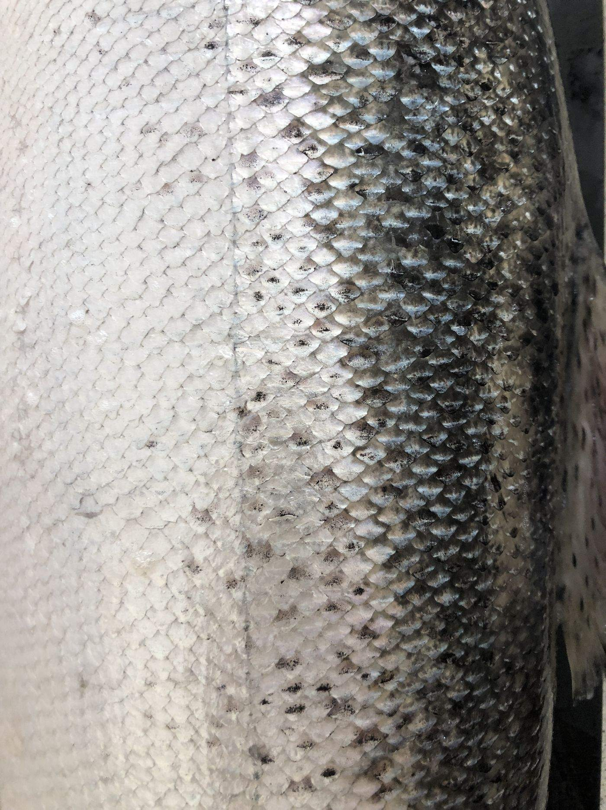
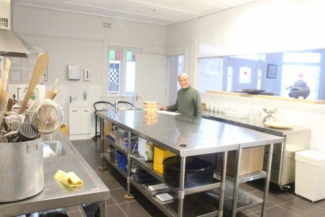
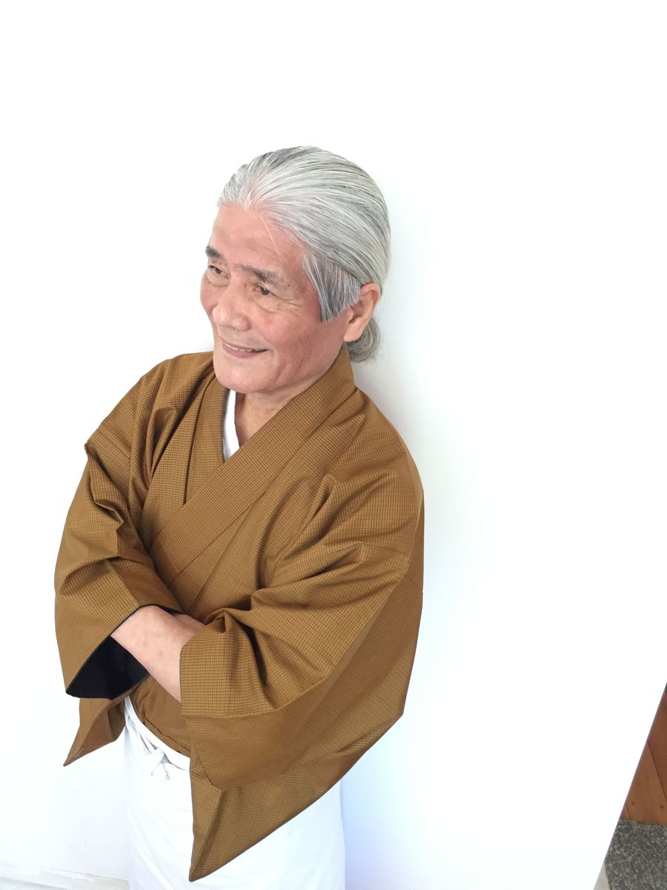
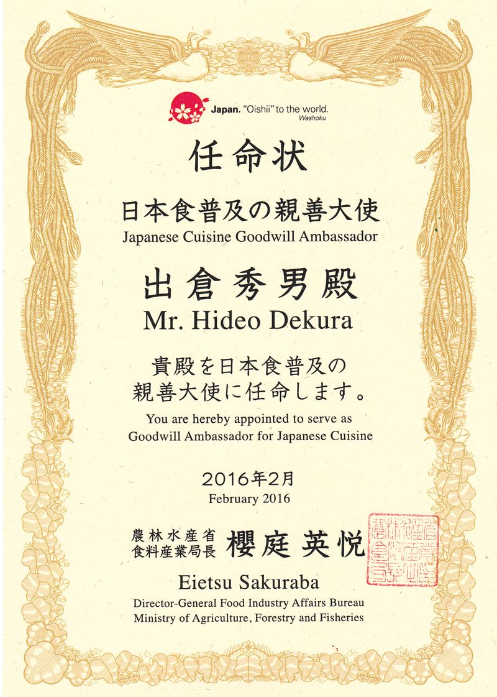

Japanese cooking studio · Chatswood, NSW
Japanese cooking, passed down through generations.
Our studio is located in Chatswood, NSW. The studio is run by Hideo Dekura, who is an author of Japanese cooking books and instructor of Japanese cooking. The studio allows around 10 people to learn cooking and dining in a cosy environment.
- 1974
- Settled in Sydney
- 10
- Guests per class, in a cosy studio
- 2016
- Goodwill Ambassador for Japanese Cuisine
01
Classes at the studio
We would like to provide you with a variety of Japanese experiences through our cooking classes. We also run corporate events and provide classes on request.
School incursion/excursion & other inquiries: dekura@bigpond.com

03
Maintain knives
Hideo takes care of your Japanese knives, for sharpening knife requests.
$25
- Up to 20cm$25
- Over 20cm$35~
- Over 30cm$50~
- Knives over 40cmCost on request
Knives with a tipped blade, and other damaged knives will be charged extra.
Book a sharpening04
Hiring studio
Our kitchen provides up to date cooking facilities and a comfortable dining area for small special occasion group events (up to 10 people).
05
Hideo Dekura

-
Tokyo
Hideo was born in Yotsuya, Tokyo. His father was a playwright and owned two Japanese restaurants, Kihei of Tokyo and Misuji, where he commenced his training, whilst still at school at Shinjuku High School and through to Nihon University. Hideo learnt from his parents the principles of sushi and kappo-ryori food preparation, cooking and presentation. These methods have been passed down through generations of his family. At the same time, he learnt the philosophy of Chakaiseki (the tea ceremony cuisine), Teikanryu Shodô (Calligraphy), Ikenobou-Ryuseiha (flower arrangement) and Hôchô Shiki (the cooking knife ceremony) under the tutelage of Shijyoushinryu by Iemoto-Shishikura Soken-Sensei.
-
Europe, England and the United States
After years of cooking and demonstrating in Japan, Hideo’s interests led him to Europe to study classical French cuisine, England and then the United States, where he was able to combine his skills in Japanese and European cuisine by working as a demonstrator in California.
-
Sydney, 1972 and 1974
In 1972 Hideo visited Australia for the first time and settled in Sydney in 1974. He set up Japanese Functions of Sydney, the first Japanese catering company in Sydney, which was highly successful. He has lectured in several places and has now opened Culinary Studio Dekura in Chatswood.
-
Master, member and lecturer
Hideo is a master of Shijoshin-ryu in Sydney. Furthermore he is a member of Food Professional Australia, (formerly Food Media Australia), Japan Master Chef Association, and a lecturer at the Sydney Sea Food School.
He is the author of several Japanese cooking books and cooking videos.
-
Awards from the Japanese Government
In 2007 and 2015 Hideo was presented with an award from the Japanese Government to those who have made significant contributions to the promotion of Japanese food and cooking.
-
Goodwill Ambassador for Japanese Cuisine
In 2016 He was appointed as Goodwill Ambassador for Japanese Cuisine.

06
Publications
Point to a spine to take a book out. On a phone, swipe the shelf sideways.
07
Links
Culture
Tools & Utensils
- Chef’s Armoury
- Knives & Stones
- Ceramic Studio En, Learn/buy ceramics
- Global Knife, Specialized Knife company
Others
- Nichigo Press
- Learn Japanese cooking in Japan: Soba Restaurant Yamakyu by Shuji Ozeki in Gifu
—